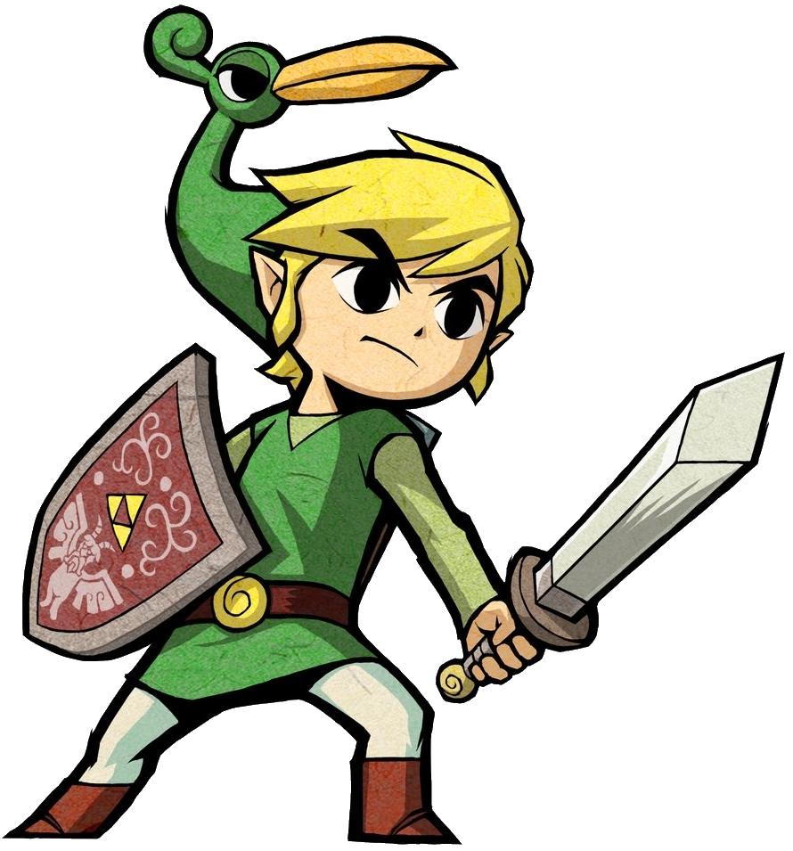

The Wiki of Zelda
Sean bienvenidos a mi pagina
"The Wiki of Zelda" es una fuente de información invaluable para los seguidores de la saga de videojuegos "The Legend of Zelda". A lo largo de las décadas, esta franquicia icónica ha cautivado a jugadores de todas las edades con sus emocionantes aventuras, personajes memorables y mundos fantásticos.
Desde el lanzamiento del primer juego en 1986, "The Legend of Zelda" ha seguido la historia del valiente héroe Link en su misión por salvar el reino de Hyrule y rescatar a la princesa Zelda de las garras del malvado Ganon. A lo largo de múltiples entregas, hemos visto a Link enfrentarse a peligrosos enemigos, resolver intrincados acertijos y explorar vastas tierras llenas de misterios.
Con el paso del tiempo, la saga ha evolucionado, introduciendo nuevos personajes, mecánicas de juego innovadoras y tramas cada vez más complejas. Cada juego aporta una nueva pieza al extenso rompecabezas que es la historia de Zelda, expandiendo el universo y sumergiendo a los jugadores en un mundo lleno de magia y aventura.
}
Gracias a "The Wiki of Zelda", los aficionados pueden sumergirse en la rica historia de la franquicia, explorando detalles sobre cada juego, personaje y ubicación. Ya sea que seas un veterano de la saga o un recién llegado, esta enciclopedia en línea es el compañero perfecto para descubrir todos los secretos que Hyrule tiene para ofrecer. ¡Prepárate para embarcarte en una épica aventura llena de leyendas y misterios en el mundo de Zelda!
